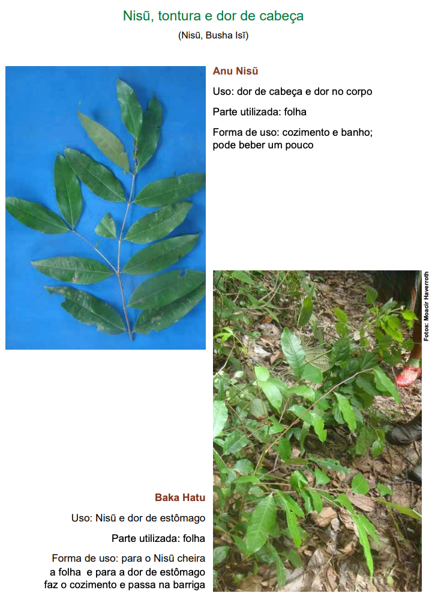
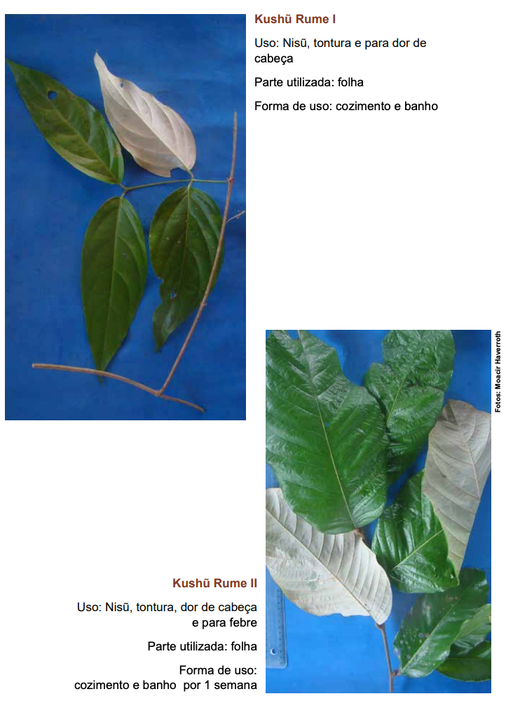

Módulo 3
Saberes Indígenas para Promoção da Saúde Mental
Tópico 3: Programa de Cultivo da Saúde Mental Indígena
nos Territórios
Cursista, essa proposta do Programa de Cultivo da Saúde Mental Indígena nos
Territórios deve ser percebida como um caminho aberto. Vamos fazer a proposição de
alguns passos, você pode seguir da forma como achar que melhor pode ser desenvolvido
no território. Cada território tem suas características próprias que devem ser
respeitadas. Dessa forma, perceba esse Programa como um passo inicial para o
desenvolvimento das suas atividades de uma forma bem singular e única.
Propomos a importância de se escutar as histórias ancestrais, mas para isso é
importante conhecer diferenças culturais importantes existentes na cultura indígena.
Inicialmente, vejam o vídeo retirado da conferência proferida por Daniel Munduruku,
um dos mais importantes e conhecidos escritores indígenas. Seu trabalho de difusão
da cultura indígena na literatura infantil e adulta são marcantes no enfrentamento
ao preconceito e desconhecimento sobre esse universo. Ganhador de várias honrarias,
é vencedor do Prêmio Jabuti (2017); Prêmio Érico Vannucci Mendes (outorgado pelo
CNPq); Prêmio Tolerância (outorgado pela UNESCO) e Prêmio da Fundação Bunge pelo
conjunto de sua obra e atuação cultural (2018).
movie
Para assistir...
Teko Porã | Excertos conferência Daniel Munduruku - Bem Viver
Indígena
Fonte: Youtube
1. Escutar as Histórias Ancestrais da Saúde Mental no Território
Então, primeiramente, para a gente iniciar o cultivo de qualquer planta, precisamos
conhecer um pouco da história daquela planta. Precisamos saber qual a melhor época
do ano; os locais que ela “pega” melhor; quais são suas características; que podemos
fazer com ela; quais a vinculação com a espiritualidade que aquela planta tem; como
ela se relaciona com os encantados daquele território.
Assim, para saber como podemos plantar, precisamos conversar com pessoas mais antigas
que talvez já tenham plantado aquele tipo de planta e os pajés que têm uma forte
conexão com a espiritualidade para saber como os encantados/as podem ajudar nessa
nova plantação.
Há narrativas, sentidos e conhecimentos específicos que constroem uma Psicologia
Indígena. Nesse sentido, devemos entender essa Psicologia Indígena por meio dos
próprios povos indígenas. É importante compreendermos a diferença de cosmovisão
indígena, apresentada por Daniel Munduruku com a lógica biologicista e eurocentrada
da saúde, desconectada da natureza.
Para tal, vejamos um vídeo do jovem indígena e estudante de medicina, Alisson
Pankararu sobre o Bem Viver.
Vamos assistir à entrevista de Francyslane Vitória da Silva (Especialista em
Saúde da Família com Ênfase na Saúde da População do Campo pela Fiocruz-Brasília
e Pesquisadora do Programa de Saúde, Ambiente e Trabalho da FIOCRUZ Brasília -
PSAT) com Eufélia Lima Gonçalves (Indígena do Povo Tariano e Enfermeira
Especialista em Saúde Indígena) sobre as estratégias de Promoção da Saúde Mental
Indígena.
Antes de dar qualquer passo, lembre de ter uma posição de humildade, interesse em
conhecer as histórias e animação para encontrar com as pessoas do território.
Esperamos que você aproveite essa caminhada com alegria, respeito e atenção. Assim,
com essas atitudes, peca a benção para a espiritualidade para podemos caminhar da
seguinte forma:
Conversar com o Pajé ou a Manje do Território para saber como ele compreende
a Saúde Mental Indígena. Essas representações têm um forte vinculo com a
espiritualidade e com os conhecimentos ancestrais. Eles/as podem ajudar
muito no desenvolvimento desse cultivo da Saúde Mental para jovens indígenas
no território. Você pode fazer as seguintes perguntas:
Como ele/a entende;
Como a
espiritualidade/ancestralidade/encantados entendem sobre saúde
mental;
Como ele percebe que poderiam ser
desenvolvidas ações de saúde mental no território para os
jovens;
Por onde poderia começar essa ação
específica de promoção de saúde mental com jovens;
Assista ao vídeo da entrevista realizada pela Coordenador do curso Dra.
Kellen Gasgue com o Pajé Francisco Uruma Kambeba, Cacique da aldeia
Tururucari-Uka, no Amazonas.
Conversar com os anciões/anciãs/troncos velhos do território. Essas pessoas
são portadores/as de conhecimentos transmitidos por meio da oralidade com
histórias de resistência e praticas de promoção de saúde mental que podem
ter sido desenvolvido por muitas gerações no território indígenas. Dessa
forma, podemos fazer as seguintes perguntas para os anciões/as
anciãs/troncos velhos:
Como eles/as compreendem a Saúde Mental?
Como eles percebem que a Saúde Mental
mudou ao longo do tempo?
O que poderia ser feito para promover a
saúde mental com os jovens do território?
movie
Para assistir...
Com esses conhecimentos ancestrais da pajelança e da
ancestralidade,
teremos uma percepção de quais as principais características
dessa saúde
mental indígena. Provavelmente, as compreensões da Saúde
Mental estariam
em torno de uma Concepção de Bem Viver em que se busca uma
vida digna e boa em conexão com a natureza, espiritualidade,
território e comunidade (Para saber mais sobre o Bem-Viver,
assista aqui:
Fonte: Youtube
Além disso, o Bem-viver também passa pela luta pelo direito a
terra e
que esta terra seja preservada.
Com o conhecimento ancestral sobre Saúde Mental, podemos passar para a
próxima fase do nosso Programa de Cultivo que deve ser encontrar uma
terra boa para plantar e pessoas disponíveis para colaborar.
2. Encontrar uma terra, mobilizar o território e adubar a Saúde Mental Indígena
Sabemos que o Brasil é território indígena, mas precisamos saber onde podemos
cultivar determinadas plantas. Com as conversas com os/as pajés/manjes e
anciãos/anciãs, já temos algumas ideais dos melhores locais. Podemos haver várias
opções de terra para plantar, mas precisamos escolher uma para começar. Ou seja,
podemos ter várias ações de saúde mental para fazer, mas precisamos escolher uma
para iniciar. Além disso, para uma grande colheita que alimente um povo, precisamos
de várias mãos para capinar, arar a terra e adubar para o cultivo de qualquer
alimento/plantação.
Para essa preparação e escolha da terra, podemos envolver várias pessoas. Novamente,
precisamos fazer conversas com diferentes pessoas e grupos que fazem parte do
território para planejar os próximos passos. Nossa sugestão será que você planeje
uma conversa com uma forma similar.
Por exemplo, você poderia trazer a seguinte informação para conversar com alguns
representantes do território, como caciques/cacikas; lideranças políticas informais;
Equipe da Saúde Indígena; Representantes da Escola Diferenciada de Educação
Indígena; Representantes da Rede de Atenção Psicossocial (Como Unidade Básica de
Saúde, Centro de Atenção Psicossocial; Núcleo de Apoio a Saúde da Família):
Estamos planejando a criação de um programa de promoção da Saúde Mental
Indígena para jovens aqui no nosso território. Estamos fazendo o Curso. Este
curso nos deu algumas ideias que podemos colocar em prática, mas primeiro
queremos saber sua opinião e saber se teríamos seu apoio. Já conversamos com
nosso pajé/manje e alguns/as anciões/anciãs.
Então, primeiro gostaríamos de saber como você esta avaliando que esta
situação da saúde mental dos jovens no nosso território;
O/a pajé/manje junto os anciões/anciãs nos deram essas ideias aqui
[compartilhar as ideias fornecidas]. Abaixo, também pensamos em algumas
ideias para promoção da Saúde Mental Indígena:
Caminhadas de
Conexão com a Natureza: Mensalmente, poderia haver caminhadas
guiada pela natureza presente no território. Poderiam ser
caminhadas de 1 hora com momentos de parada para conversar como
as pessoas estão se sentindo com essa atividade;
Cuidando do
Sagrado: Encontros semanais, quinzenais ou mensais em que uma
pessoa poderia trazer momentos de meditação guiada, músicas e
danças do território para cuidar dessas conexões ancestrais de
cada uma/a. Sugerimos que todo o encontro tenha um momento das
pessoas compartilharem seus sentimentos de como estão naquele
momento. Em seguida, realizar atividades de conexão com
espiritualidade;
Encontro de
Cuidado dos Sentimentos: Encontros semanais, quinzenais ou
mensais em que as pessoas presentes trocam sentimentos de como
estão se sentindo em busca do apoio mútuo. Podem fazer encontros
em que uma pessoa pode ser a principal a compartilhar como está
se sentindo ou pode ser um encontro aberto com quem deseja
compartilhar seus sentimentos.
Encontro de
Escada Pês e Ervas Medicinas: Encontros semanais, quinzenais ou
mensais em que as pessoas envolvidas trocam saberes sobre ervas
medicinais. Podem fazer a tomar as próprias infusões dos chás
quando estiver ocorrendo o encontro. Também, poderiam fazer um
escalda pês mútuo entre as pessoas presentes, revezando o
momento de dar e receber o escalda pés.
Cursista, para você entender melhor, te apresento um exemplo de como os
Saberes Populares atuam para a prevenção dos principais agravos em saúde
mental usaremos um domínio essencial na medicina e saúde indígena:
o uso
das plantas medicinais.
Para os indígenas, os processos de saúde e doença implicam conexões entre
natureza, cultura, aspectos físicos e espirituais. Aqui, trazemos como
exemplo uma cartilha, resultado de um levantamento etnobotânico das
plantas medicinais utilizadas pelos indígenas Kaxinawá, que traz uma
amostra de como as plantas são utilizadas a partir da sabedoria popular
indígena para o cuidado e prevenção de agravos.
Para os Kaxinawá, as doenças possuem causas múltiplas e são produzidas
por um conjunto de forças internas e externas, enquanto os
desenvolvimentos físico, mental, emocional e espiritual estão
relacionados entre si.


Nos exemplos acima, a cartilha aponta como, para a comunidade, é
possível
tratar situações de dor de cabeça, febre, tontura e dor de
estômago,
enfermidades que, dentro da cultura ocidental, são tratadas por
meio de
fármacos. Além disso, a comunidade possui ervas medicinais
tipificadas
como antibióticos, como no caso da Karu Tukua Rau.
Com a atividade de promoção de saúde mental identificada e as pessoas
disponíveis, vocês podem planejar onde serão realizadas as
atividades. Apresentamos abaixo algumas sugestões de locais:
Escola;
Unidade de Saúde Indígena;
Unidade Básica de Saúde;
Associação;
Espaço de espiritualidade no
território;
Casa de uma alguma pessoa do
território com quintal ou área para fazer roda;
Alguma rua do território que as
pessoas possam reunir;
Outro espaço que for
identificado;
Despois de escolher o espaço e a atividade, vocês poderiam fazer uma
divulgação da atividade no grupo de WhatsApp da aldeia, comunidade e
território. Igualmente, poderiam imprimir algumas folhas de convite
para
divulgar o grupo. Estejam abertos/as a novas pessoas que gostariam
de
auxiliar na facilitação e organização da atividade junto com vocês.
Com essas atividades, nos conseguimos encontrar uma terra fértil,
identificar o que vamos plantar, arar a terra de forma coletiva e
comunitária; e iniciar o processo de plantação das primeiras
sementes;
3. Plantar as primeiras sementes, regar, podar e Cuidar da Saúde Mental Indígena
Com a divulgação da atividade e início das atividades, entendemos que chegamos no
momento de plantar as primeiras sementes. O primeiro encontro é essencial para
organização das atividades e a pactuacao da regularidade das atividades com os/as
presentes. No entanto, antes de compartilhar com vocês as orientações sobre o
primeiro encontro, gostaríamos de reforçar que as pessoas que irão facilitar as
atividades propostas estejam disponíveis para realmente escutar as pessoas
participantes dos grupos e das atividades:
Temos algumas sugestões simples de como realizar esse processo de facilitação e
cuidado dos sentimentos:
Evitar Julgamentos. Por exemplo, evite falar
frases como “Eu acho que você está errado”; “Que horrível que isso
aconteceu com você”
Prefira focar nos sentimentos que a pessoa esta
compartilhada com frases que tentem reconhecer que você está entendendo
o que ela está dizendo: “Você parece que está se sentindo triste com
isso” “Eu sinto que você ficou muito chateado com o que correu com você”
Demonstre que você está presente com atitudes
corporais. Olhe nos olhos. Evite ficar olhando o celular. Preste atenção
em como as pessoas estão se sentindo;
Estejam abertos/as sugestões de atividades
dos/as próprios/as participantes do grupo.
No primeiro encontro, tudo deve ser acordado entre as pessoas. Temos um passo a passo
desse primeiro momento:
Antes do Encontro:
Reforce no grupo de WhatsApp ou entre as
pessoas
envolvidas a data e horário do primeiro encontro;
Prepare um passo a passo desse primeiro
encontro;
Chegue um pouquinho cedo para arrumar o
local de
realização das atividades;
Priorize a organização do espaço para
realizar a
atividade em um círculo para que todas as pessoas estejam na
mesma
altura e
possam saber onde cada um/a esta;
Durante o Encontro:
Iniciem com uma Dinâmica de apresentação
das pessoas;
Façam a apresentação do objetivo do
encontro;
Convidem as pessoas para realizarem as
atividades propostas;
Com a finalização das atividades, façam
uma avaliação de como foi o encontro. Assim, para notar se nosso
Programa de Saúde Mental, precisa de algum cuidado mais
especifico (como mais adubo, poda ou mudar a área da plantação),
eh necessário que cada encontro tenha uma avaliação de como
foram vivenciadas as atividades.
Os/as facilitadores/as podem perguntar o que os/as participantes
acharam das atividades;
Avaliem o formato, qual será a
periodicidade, o horário e local de realização;
Depois do Encontro:
Divida entre o grupo que esta ajudando
na organização uma divisão de atividades;
Avaliem como foi o encontro;
Organizem seus calendários para estarem
presentes nos próximos encontros a partir dos acordos firmados
de dia, horário, local e formato do encontro;
Estejam abertos/as para realização de
encontros individuais com os/as participantes do grupo que
queiram conversar de forma mais privada sobre seus sentimentos;
Tenha momentos de autocuidado para ficar
bem para cuidar das outras pessoas;
Com todo esse cuidado do Programa de Cultivo da Saúde Mental Indígena
para jovens,
acreditamos que vocês irão colher bons frutos nos territórios. Realmente, leva-se um
tempo para encontrar a planta mais adequada, o local para fazer esse cultivo, as
pessoas que irão cuidar da terra de forma coletiva, a processo de adubação e o
cuidado nesse momento importante de semear. Ter a regularidade na rega, poda e
adubação também é muito importante. Com esses cuidados e esses passos, acreditamos
que a Saúde Mental crescera forte, integrada aos saberes do território, conectada
com a ancestralidade e expandindo suas raízes para o desenvolvimento de novos brotos
e ações futuras.
Agora, vamos assistir ao psicólogo comunitário James Moura, que tem desenvolvido, de
forma coletiva, uma atividade de fortalecimento da saúde mental indígena com os
Troncos Velhos da etnia Pitaguary, na Aldeia Monguba, no Nordeste do Brasil.
Agradecemos muito ter compartilhado com você todos esses ensinamentos. Esperamos que
vocês sigam nessa jornada ancestral de cuidado e fortalecimento da Saúde Mental
Indígena.
movie
Para assistir...
Saberes Indígenas – Ancestralidade, tradição e educação com a natureza
Cursista, para complementar essa conversa, separamos para você um vídeo
que
aborda Saberes Indígenas – Ancestralidade, tradição e educação com a
natureza. Que tal assistir até o final e pensar na relação entre o
diálogo
do vídeo e tudo o que foi abordado até aqui?
Livro: “Saúde Mental e Povos Indígenas: Interculturalidade
e Práticas de Cuidado”. Porto Alegre: Editora Rede Unida, 2020.
O livro discute a importância de integrar os saberes tradicionais
indígenas nas práticas de saúde mental e as relações interculturais
entre profissionais de saúde e as comunidades.
Artigo: "A Importância da Ancestralidade no Cuidado em
Saúde Mental nas Comunidades Indígenas". Saúde e
Sociedade, v. 27,
n. 4, 2020.
Um artigo que explora como os aspectos espirituais e ancestrais
influenciam positivamente o cuidado com a saúde mental nas populações
indígenas.
Documentário: "Espiritualidade e Saúde entre os Povos
Indígenas do Brasil". Direção: Renato Terra, 2019.
Este documentário investiga a relação entre espiritualidade, saúde mental
e práticas tradicionais de cura entre diferentes etnias indígenas no
Brasil.